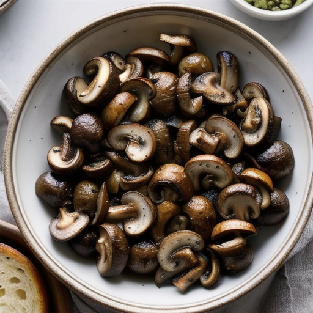

Roasted Mushrooms

Description
A simple yet delicious recipe, roasted mushrooms pair well with many meat and vegetable dishes.
Ingredients
- 1-1/2 pounds white button or cremini mushrooms, cleaned and quartered
- 2 tablespoons extra-virgin olive oil
- Kosher salt
- Freshly ground black pepper
- 8 sprigs fresh thyme
Steps
- Preheat oven to 400°F.
- Toss mushrooms with olive oil in a large bowl and season with salt and pepper.
- Transfer mushrooms to a baking sheet lined with parchment paper. Scatter thyme sprigs evenly over the top.
- Roast until the mushrooms are well browned and flavorful, 30 to 45 minutes.
- Discard the thyme sprigs, transfer the mushrooms to a serving bowl, and serve.